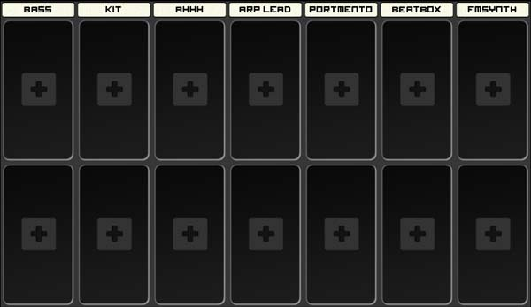
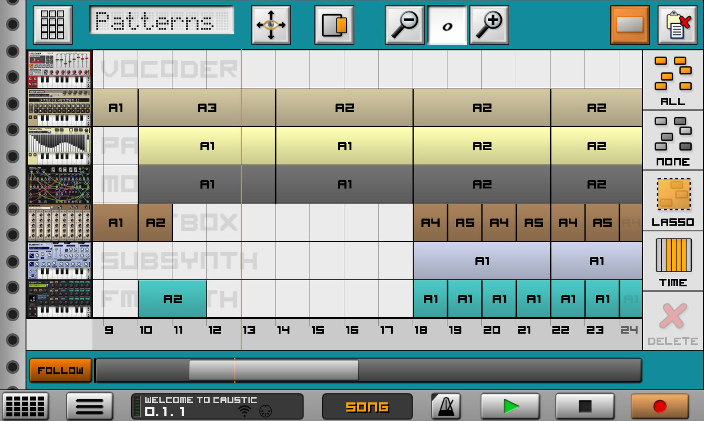
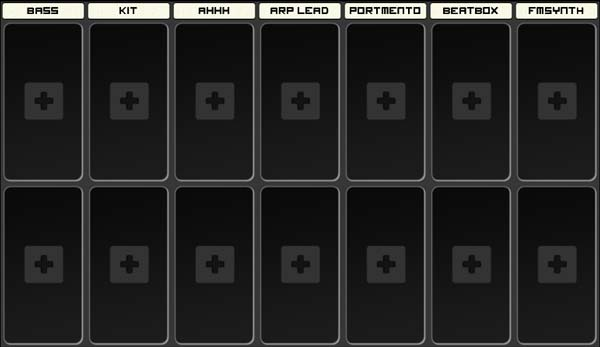
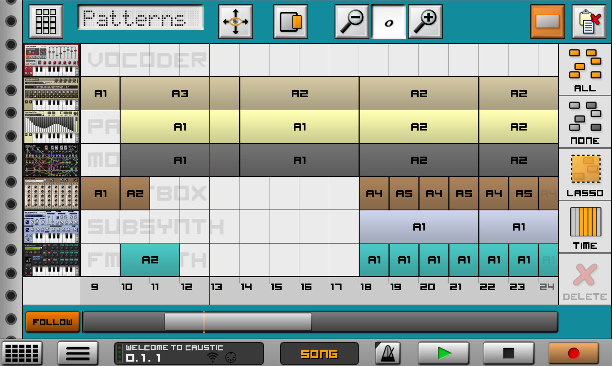

About
Caustic is a music creation tool that uses different synthesizers, samplers and effects to create songs. Endless combinations of instruments and sounds means Caustic can be used to create music of various styles, even though the app's main focus is electronic music. Caustic is modelled after a rack-mount cabinet where devices are stacked and connected in order to produce sound.
Video demonstrating the various sounds.
Video showing how to mix in caustic.
Caustic's rack consists of a maximum of 14
dynamic machines, plus 4 permanent machines: the effects rack, the mixer,
the master mixer and the sequencer.
Effects Rack

To place a new effect, touch inside an empty slot and effect selection popup will ask you which effect you want to
place. To remove an effect, touch the "X" in the lower right-hand corner of the effect. All effects can be bypassed
(signal goes through untouched by the effect) by pressing the top of the effect where its name is. The top-right LED
indicates whether the effect is active or not.
The Mixer

The mixer is where the signal from each machine gets added (or "mixed") into the final audio result you hear.
There are 7 "strips" in each mixer, and 2 possible mixers in your rack. The first mixer corresponds to machines 1-
7 and the second mixer corresponds to machines 8-14 (if present)
Each strip has the following controls which affect the sound signal coming from the machine (once it has
passed through the insert effects):
The Master Mixer

The Master section is where the global effects are configured and where you can manipulate the combined sound
of all the instruments in your rack before it heads out to the sound card. There are two insert effect slots, a
semi-parametric EQ, a limiter effect as well as a final volume control.
The Sequencer

The sequencer is where patterns and notes are put together to create a song.
Make sure the toggle in the Control
Panel is in Song mode to use the sequencer.The sequencer has 2 views which work at the same time to trigger notes,
a pattern view and a piano roll view.
Effects Rack
To place a new effect, touch inside an empty slot and effect selection popup will ask you which effect you want to place. To remove an effect, touch the "X" in the lower right-hand corner of the effect. All effects can be bypassed (signal goes through untouched by the effect) by pressing the top of the effect where its name is. The top-right LED indicates whether the effect is active or not.
The Mixer
The mixer is where the signal from each machine gets added (or "mixed") into the final audio result you hear. There are 7 "strips" in each mixer, and 2 possible mixers in your rack. The first mixer corresponds to machines 1- 7 and the second mixer corresponds to machines 8-14 (if present) Each strip has the following controls which affect the sound signal coming from the machine (once it has passed through the insert effects):
The Master Mixer
The Master section is where the global effects are configured and where you can manipulate the combined sound of all the instruments in your rack before it heads out to the sound card. There are two insert effect slots, a semi-parametric EQ, a limiter effect as well as a final volume control.
The Sequencer
The sequencer is where patterns and notes are put together to create a song. Make sure the toggle in the Control Panel is in Song mode to use the sequencer.The sequencer has 2 views which work at the same time to trigger notes, a pattern view and a piano roll view.